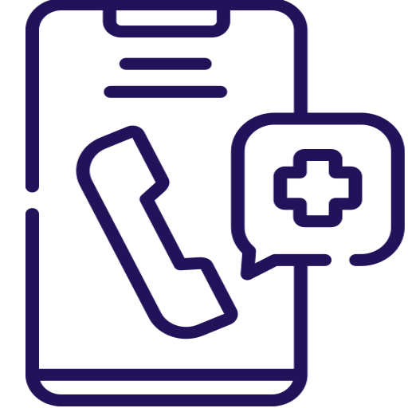

Información para pacientes
― Siempre estamos pensando en el bienestar de nuestros pacientes ―
Mi Corazón
Acceso al portal en línea exclusivo para pacientes
Conocé Mi Corazón
Coberturas
Te acercamos un listado de todas las coberturas médicas
Listado de coberturasConsultario Virtual
Consulta médica desde la comunidad de tu hogar u oficina
Conocé el servicioEducación para Pacientes
Porque nos encanta cuidarte
Charlas y CursosTestimonios
Conocé sus historias
Listado de coberturasCA
Instituto
Cardiovascular
En "Corazón Abierto", entendemos que tu bienestar cardiovascular es nuestra prioridad. Esta sección está diseñada para proporcionarte herramientas y recursos que te ayudarán a comprender y manejar mejor tu salud cardíaca, facilitando una experiencia de cuidado integral y personalizado.
• Mi Corazón: Accede a nuestro aplicativo diseñado especialmente para ti, donde podrás gestionar tus turnos médicos, revisar resultados de estudios y mantener un registro de tu historial de salud cardíaca de manera segura y conveniente.
• Coberturas: Obtén información clara y detallada sobre las coberturas médicas disponibles en "Corazón Abierto", asegurando que tengas acceso a los servicios y tratamientos que necesitas para tu salud cardiovascular.
• Consultorio Virtual: Disfruta de la comodidad y accesibilidad de nuestras consultas médicas virtuales. Conéctate con nuestros especialistas desde cualquier lugar, para consultas de seguimiento, orientación y apoyo continuo en el manejo de tu condición cardíaca.
• Educación para Pacientes: Explora recursos educativos diseñados para empoderarte con conocimientos sobre tu salud cardiovascular. Desde artículos informativos hasta videos educativos, encuentra la información que necesitas para tomar decisiones informadas y llevar un estilo de vida saludable.
• Testimonios: Conoce las historias inspiradoras de otros pacientes que han pasado por experiencias similares. Los testimonios ofrecen perspectivas únicas y motivadoras que pueden ayudarte a sentirte acompañado y optimista sobre tu propio camino hacia la salud cardiovascular.
En "Corazón Abierto", estamos comprometidos a brindarte el apoyo integral que necesitas para cuidar de tu corazón y tu bienestar general. Apreciamos la confianza que has depositado en nosotros y esperamos seguir acompañándote en cada paso de tu viaje hacia una vida más saludable y plena.
Bienvenido a nuestra comunidad, donde tu salud cardiovascular es nuestra razón de ser.